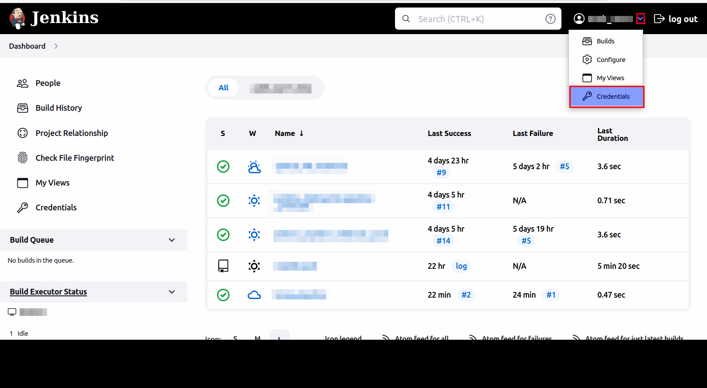
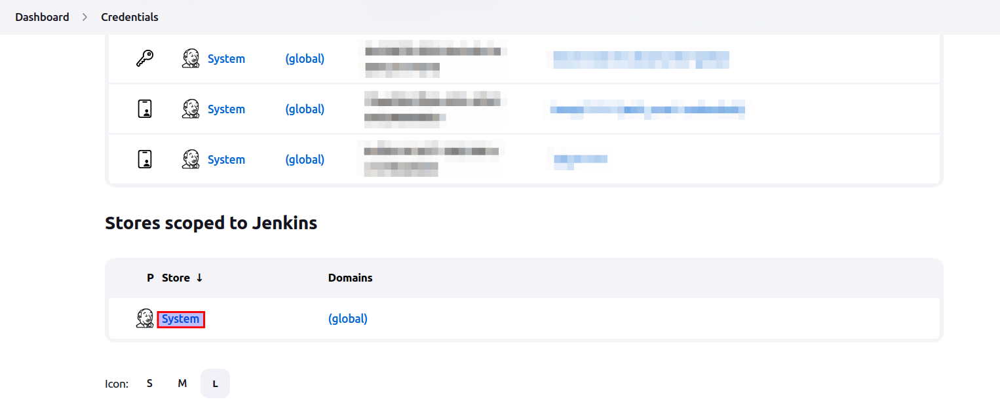
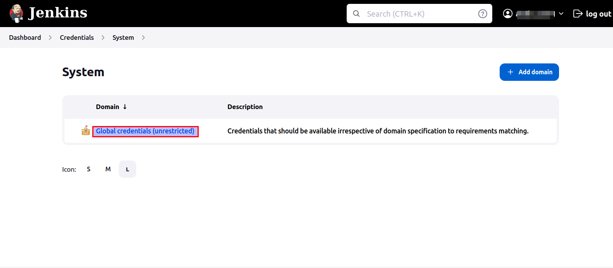
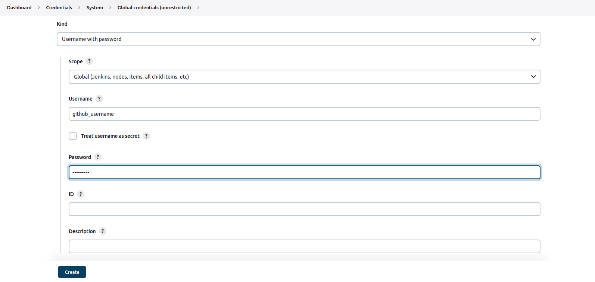
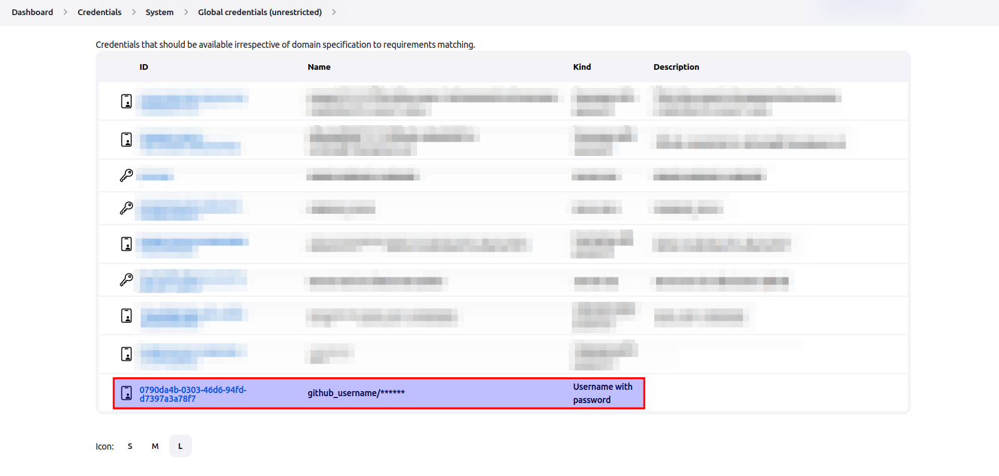

Software Developer Guide for RISC-V CI
A software developer is the end-user who will develop or build his/her projects on RISC-V CI infrastructure. This guide will cover all the things a software developer needs to create a project based on RISC-V Continuous Integration (CI).
Currently, the specifications for RISC-V CI is as follows.
Pre-requisites
- GitHub account.
- GitHub project repository with owner rights.
Getting an account for Cloud-V
Contact us for a new account by creating an issue on github or through email with following required details:
- Name
- Contact Email
- URL of the GitHub project repository
- Name of your organization
After this we will get back to you with login credentials
Setting up Jenkinsfile inside github project repository
Jenkins pipeline will need a Jenkinsfile written with jenkins pipeline syntax to start execution of tests/checks (see link). This pipeline will contain all the stages (and may be steps) of a CI/CD pipeline. This pipeline can be scripted pipeline which will only have stages or it can also be declarative pipeline which may also have steps inside stages.
A simple scripted Helloworld pipeline in linux is as follows:
node{
stage('*** Compilation Phase ***') {
//Using bash commands
sh '''#!/bin/bash
echo "Hello World !\n"
'''
}
}
Upon execution of such a pipeline, the console output can be viewed as follows.

Note: This jenkinsfile should remain same in all the branches and pull requests.
Setting credentials for webhook
Jenkins supports webhooks which can trigger the job from external sources such as GitHub. They work in a way such that, if a specified branch is committed or if a pull request is created, the specified job build starts running depending upon the trigger event which is set in build's configuration in jenkins.
This process requires GitHub credentials of owner of repository on which the webhook is to be set. These credentials can be safely added to jenkins without anyone (even administrator) seeing the passwords as follows.
- We will provide you the credentials on the provided email.
- Login with provided credentials.
- Click on the drop down near user profile as shown in image below.

- This will take you to the credentials page.
- Scroll down to the
Stores scoped to Jenkinsand click on theSystemas shown in the image.

- Click on
Global credentials (unrestricted).

- Click on
Add Credentials.

- This will take you to the
New Credentialspage. - Select
KindasUsername with password. - Select
ScopeasGlobal (Jenkins, nodes, items, all child items etc). - Enter the GitHub username in
Username. - You may check
Treat username as secretwhich will mask username in console output of builds, but this is not recommended by jenkins due to performance issues. - Enter
PasswordasGitHub personal authentication token(PAT) which can be acquired from Github account settings. IDandDescriptioncan be left empty. But it is recommended to give a unique ID and a suitable but careful description by which administrator will be able to identify and use these credentials to set up github webhook.- Select
Create. - This process will look something like this.

- Now credentials will be available in the credentials list and will be shown to you as well as administrator as shown in the image below. This will create an option in configurations for using these credentials in github webhook without changing or viewing them.

Requirements for administrator
After the above setup is complete from software developer's side, developer will need to provide the administrator with following information.
- Dependencies for running the project which can be packages which are needed to install in the RISC-V CI environment by administrator.
- Events for triggering the job build.
- URL of GitHub repository.
- Path and name of Jenkinsfile on the provided GitHub repository.
- Any additional information which should be given for successful execution of job builds.